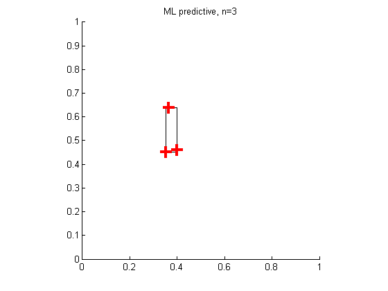
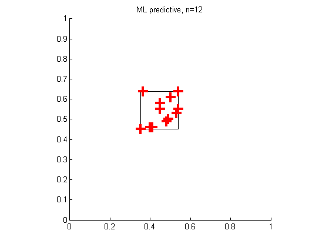
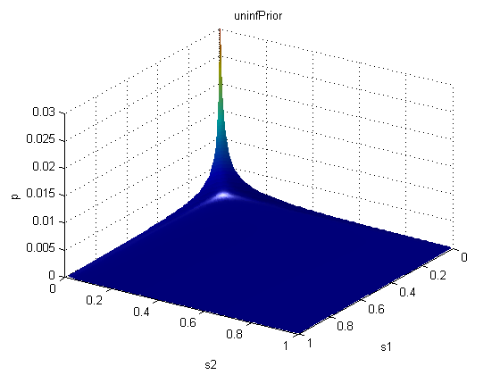
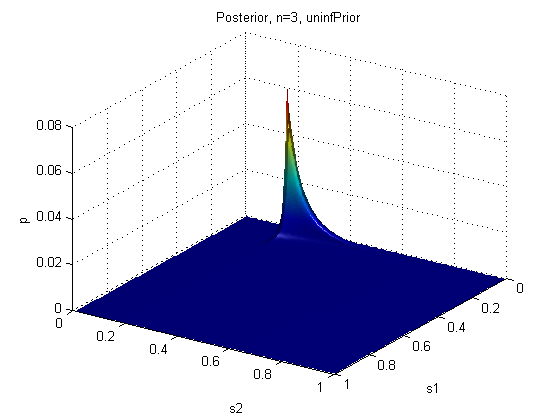
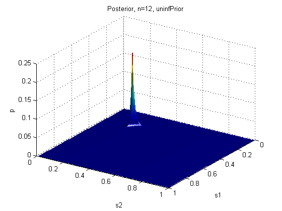
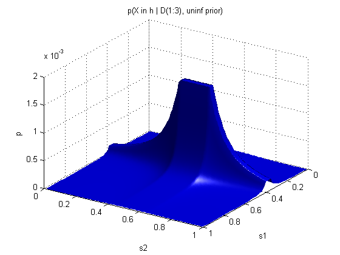

Josh Tenenbaum's Healthy Levels Game
Contents
- Distributions
- Plotting Functions
- See function plotSampledHypotheses for details
- Sample some scales from the posterior and plot rectangles
- Plot the contour of the specified function.
- Plot the surface of the specified function
- Prepare data for plotting by contour, surf, etc.
- Helper Functions
- Generate the synthetic data - positive examples only
- Calculate the range of the first n data points
- Map relative probability mass to greyscale
- Turns off numeric tick labels on the currnt graph.
% This file is from pmtk3.googlecode.com function healthyLevels()
no = 0; yes = 1; data = generateData(); % [cholesterol, insulin] [left right bottom top scale1 scale2] = calcDataRange(data,size(data,1)); plotML(); priorFn = @uninfPrior; genFn = @generalizationUninfPrior; priorType = 'uninfPrior'; %plotPriorPost(); 
plotGeneralizations(); 
%plotPostSamples();
plotBayes(); 
if 0 priorFn = @expPrior; genFn = @generalizationExpPrior; priorType = 'expPrior'; end %placeFigures(); return;
Distributions
function p = uninfPrior(h) s1 = h(:,1); s2 = h(:,2); p = 1./(s1.*s2); end
function p = expPrior(h) s1 = h(:,1); s2 = h(:,2); sigma1 = 0.5; sigma2 = 0.5; p = exp(-((s1/sigma1).*(s2/sigma2))); end
function lik = likelihood(h,data) n = size(data,1); s1 = h(:,1); s2 = h(:,2); [cMin cMax iMin iMax cScale iScale] = calcDataRange(data,n); indicator = @(s1,s2)((s1 > cScale) .* (s2 > iScale)); lik = (1./((s1.*s2).^n)).*indicator(s1,s2); end
function p = posteriorFn(h,data) p = likelihood(h,data) .* priorFn(h); %Unnormalized end
function p = generalizationUninfPrior(y,X) n = size(X,1); [d1 d2 X1scale X2scale] = neighbour(y,X); %p = 1 ./ ((n*(n-1)*n*(n-1))*((X1scale + d1).^(n-1)).* ... % ((X2scale + d2).^(n-1))); denom = ((1+( d1/X1scale )).*(1+( d2/X2scale ))); p = (1./denom).^(n-1); % Tenenbaum thesis eqn 3.16 end
function p = generalizationExpPrior(y,X) sigma1 = 0.5; sigma2 = 0.5; lambda = 1; % 1 is lower bound, 2 is upper bound [d1 d2 X1scale X2scale] = neighbour(y,X); n = size(X,1); numer = exp(- ( (d1/sigma1) + (d2/sigma2))); denom = ((1+( d1/X1scale )).*(1+( d2/X2scale ))).^(n-lambda); p = numer ./ denom; % Tenenbaum thesis eqn 3.17 end
function [d1 d2 X1scale X2scale] = neighbour(y,X) % Calculate d1,d2 from the data. dj(i) is 0 whenever y(i,j) is % within the span of the data X, otherwise its the distance to the % nearest neighbour along the jth dimension. [X1min X1max X2min X2max X1scale X2scale] ... = calcDataRange(X,size(X,1)); d1 = ((y(:,1) < X1min).*abs(y(:,1) - X1min)) + ... ((y(:,1) > X1max).*abs(X1max - y(:,1))); d2 = ((y(:,2) < X2min).*abs(y(:,2) - X2min)) + ... ((y(:,2) > X2max).*abs(X2max - y(:,2))); end
Plotting Functions
function plotPriorPost() figure; plotSurface(@(h)priorFn(h), [], no, no, no, ... [0 1 0 1 0 0.03], priorType); shading interp; printPmtkFigure(sprintf('%healthyLevels%s', priorType)); points = [3 12]; %zscale = [0.05 0.1 0.15]; for i=1:length(points) figure; %scale = [0 1 0 1 0 zscale(i)]; scale = []; plotSurface(@(h,data)posteriorFn(h, data), ... data(1:points(i), :),yes, no, no, scale,... {sprintf('Posterior, n=%d, %s', points(i), priorType)}); shading interp; fname = sprintf('healthyLevelsPost%d%s', points(i), priorType); printPmtkFigure(fname); end end
function plotGeneralizations() points = [3 12]; for i=1:length(points) figure; ttl = sprintf('p(X in h | D(1:%d), uninf prior)', points(i)); %scale = [0 1 0 1 0 0.0002]; %scale = [0 0.5 0 0.5 0 0.1]; scale = []; plotSurface(@(Y,X)genFn(Y,X),data(1:points(i),:),yes,yes,no,... scale, ttl, false); fname = sprintf('healthyLevelsGen%d%s', points(i), priorType); printPmtkFigure(fname); end end
function plotPostSamples()
See function plotSampledHypotheses for details
points = [3 12];
for i=1:length(points)
figure;
ttl = sprintf('samples from p(h|D(1:%d)), %s', points(i),...
priorType);
%plotSampledHypotheses(@(h,data)posteriorFn(h, ...
% data(1:points(i),:)),...
% data(1:points(i),:),no,ttl);
plotSampledHypotheses(@(h,d)posteriorFn(h,d), ...
data(1:points(i),:), no, ttl);
fname = sprintf('healthyLevelsSamples%d%s',...
points(i), priorType);
printPmtkFigure(fname);
end
end
function plotSampledHypotheses(post,data,newFigure,plotTitle)
Sample some scales from the posterior and plot rectangles
with these scales centered on the data. Shade them by probability.
if(newFigure) figure('Color',[1,1,1]); end seed = 3; randn('state', seed); rand('state', seed); stepSize = 0.01; [x, y] = meshgrid(stepSize:stepSize:1,stepSize:stepSize:1); s1 = x(:); s2 = y(:); h = [s1,s2]; % Entire hypothesis range p = post(h,data); pNorm = p ./ sum(p); N = 10; ndx = sampleDiscrete(pNorm,1,N); sampleScale1 = x(ndx); sampleScale2 = y(ndx); plot(data(:,1),data(:,2),'+r','MarkerSize',12,'linewidth',3); hold on [cMin cMax iMin iMax cScale iScale] = calcDataRange... (data, size(data, 1)); % cScale is horizontal range of the data % Frame the data symmetrically,(L(i,1),L(i,2) is lower left corner) L(:,1) = cMin - ((sampleScale1 - cScale)./2); L(:,2) = iMin - ((sampleScale2 - iScale)./2); colors = colorScheme(sortrows(pNorm(ndx),-1)); colors = colors - 0.5 for i=1:N rectangle('Position',[L(i,1), L(i,2), sampleScale1(i),... sampleScale2(i)],'LineWidth',3,... 'EdgeColor',colors(i,:)); end title(plotTitle); axis([0.2 0.7 0.25 0.8]);
end
function plotML() points = [3 12]; for i=1:length(points); figure; plotMinRule(data(1:points(i),:),no); title(sprintf('ML predictive, n=%d', points(i))) fname = sprintf('healthyLevelsMLpred%d', points(i)); printPmtkFigure(fname); end end
function plotBayes() points = [3 12]; for i=1:length(points); figure; plotContour(@(Y,X)genFn(Y,X),data(1:points(i),:),... yes,yes,no,'','',''); title(sprintf('Bayes predictive, n=%d, %s', points(i),... priorType)) fname = sprintf('healthyLevelsBayesPred%d%s', points(i),... priorType); printPmtkFigure(fname); end end
function plotMinRule(data,newFigure) % Plot the data and the smallest rectangle completely enclosing % that data. if(newFigure) figure; end [cMin cMax iMin iMax cScale iScale] = calcDataRange... (data, size(data, 1)); rectangle('Position',[cMin, iMin, cScale, iScale], 'linewidth', 3); hold on; plot(data(:,1),data(:,2),'+r','MarkerSize',12,'linewidth',3); f = 0.1; %axis([left-f,right+f,bottom-f,top+f]); axis([0 1 0 1]) axis square; %xlabel('Cholesterol'); %ylabel('Insulin'); %turnOffTickLabels; end
function plotContour(func, data, dependsOnData,... plotDataToo, newFigure, xlab, ylab, plotTitle)
Plot the contour of the specified function.
if(newFigure) figure; end [x y p] = formatForPlot(func,data,dependsOnData); contour(x, y, p, 'linewidth', 3) colormap(gray); hold on; if(plotDataToo) plot(data(:,1),data(:,2),'+r','MarkerSize',12,'linewidth',3); end %f = 0.3; %axis([left-f,right+f,bottom-f,top+f]); axis square; title(plotTitle); xlabel(xlab); ylabel(ylab); %turnOffTickLabels;
end
function plotSurface(func, data, dependsOnData,... solid, newFigure, scale, plotTitle, changeView)
Plot the surface of the specified function
if nargin<8, changeView=true; end if(newFigure) figure; end [C,I,p] = formatForPlot(func,data,dependsOnData); view([123.5 32]); grid('on'); hold on; if(solid) surf(C,I,p,'FaceColor','blue','EdgeColor','none', 'linewidth', 3); else surf(C,I,p, 'linewidth', 3); end camlight right; lighting phong; %xlabel( 's1' ); %ylabel( 's2'); zlabel( 'p'); title(plotTitle); if ~isempty(scale), axis(scale); end % turnOffTickLabels;
end
function [x y p] = formatForPlot(func, data, dependsOnData)
Prepare data for plotting by contour, surf, etc.
stepSize = 0.01;
[x, y] = meshgrid(stepSize:stepSize:1,stepSize:stepSize:1);
[rows cols] = size(x);
s1 = x(:);
s2 = y(:);
h = [s1 s2];
if(dependsOnData)
p = func(h,data);
else
p = func(h);
end
p = normalize(p);
p = reshape(p, rows, cols);
end
Helper Functions
function data = generateData()
Generate the synthetic data - positive examples only
Healthy levels we are trying to discover
cLow = 0.35; cHigh = 0.55;
iLow = 0.45; iHigh = 0.65;
if(0) % Use randomly generated data
n = 12;
seed = 42;
rand('seed',seed);
data = rand(n,2);
data(:,1) = data(:,1)*(cHigh - cLow) + cLow;
data(:,2) = data(:,2)*(iHigh - iLow) + iLow;
else % Cheat and use interesting looking data.
c = [0.351 ; 0.363 ; 0.40 ; 0.54 ;...
0.45 ; 0.49 ; 0.48 ; 0.50; 0.45; 0.41; 0.53; 0.54 ];
i = [0.452 ; 0.64 ; 0.46 ; 0.55; 0.55 ;...
0.50 ; 0.49 ; 0.61; 0.58; 0.46; 0.53; 0.64];
data = [c i];
end
end
function [cMin cMax iMin iMax cScale iScale] = calcDataRange(data, n)
Calculate the range of the first n data points
cMin = min(data(1:n,1)); cMax = max(data(1:n,1));
iMin = min(data(1:n,2)); iMax = max(data(1:n,2));
cScale = cMax - cMin;
iScale = iMax - iMin;
end
function colors = colorScheme(samples)
Map relative probability mass to greyscale
minColor = 0.96;
colors = 1 - samples;
colors = max(0,colors - 0.1);
colors(colors > minColor) = minColor;
colors = repmat(colors,1,3);
end
function turnOffTickLabels()
Turns off numeric tick labels on the currnt graph.
set(gca, 'XTickLabel',[]); set(gca, 'YTickLabel',[]); set(gca, 'ZtickLabel',[]);
end
end %EOF